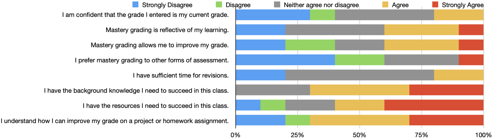
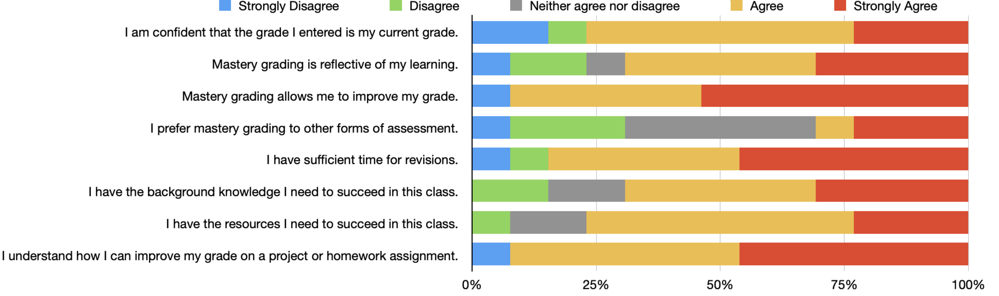
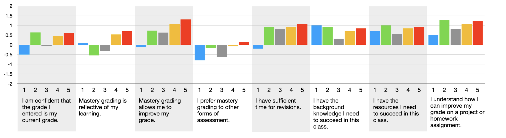

Mastery Grading in a Software Engineering Course
Carlos Rojas, Ph.D.
Gina Quan, Ph.D.
Motivation
Our current system has turned higher education into a game that students win when they obtain the most coveted rewards—that is, high grades—for putting in the least amount of time and effort.
-Linda B. Nilson, Ph.D.
What is Mastery Grading?
Students are assessed on whether they meet a threshold, i.e. mastery
Each assignment has rubrics that establishes the threshold
There is no partial credit
Students are allowed retakes for assessments
Course Background
- First upper division course for Computer Engineering and Software Engineering majors
- Spring 2022 taught two sections with 34 and 49 respectively (N=83)
- 10%-30% non-majors
How I applied Mastery Grading?
- I created several assessment categories
- Each category specifies how many assignments need to pass to earn letter grade
- Created a currency called Tokens to limit revisions and add flexibility to their learning
Quizzes
Homeworks
Project
Exams
Letter Grade Mapping
Assignments were graded on a tertiary system: needs revision, low pass, and high pass
A student needs to meet the grade for every category to earn that grade
Results
Method & Goal
We survey students at regular intervals during the semester
We wanted to know how students attitude toward mastery grading evolved over time
Student Survey Distributions
 Student Survey Distributions
- First and last survey
- Students felt they had the background knowledge to succeed
- Understood how to to improve their grade
- Median did not prefer mastery over other assessments
Results of all Surveys
Results of survey questions taken at five time points
We converted the likert scale to range from -2 to +2 and averaged
What did we learn?
- Need to invest in student buy-in and possibly departmental buy-in
- Course preparation is time consuming, but it can be done in stages
- Need to give consideration of how well your assessments map to the course learning outcomes
Acknowledgements
Teaching Experiment Academy (TEA)
Spring 2022 CMPE 131: Software Engineering class